Պաշտոնական անվանումը՝ Հայաստանի Հանրապետություն
Մայրաքաղաքը՝ Երևան
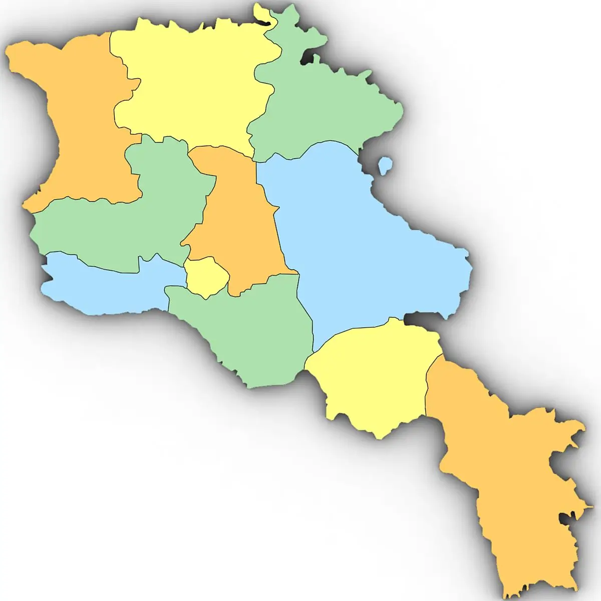
ԲՆՈՒԹԱԳԻՐ

Տվյալներ
Տարածքը
29 743 քառ. կմ
Կոորդինատները
40°04'08.8"N, 45°02'17.5"E
Ժամանակային գոտին
UTC (UTC +4)
Լեռներ և բարձրավանդակներ
36.4 % (ՀՀ տարածքի)
Ջրային տարածք
4.71 % (ՀՀ տարածքի)
Միջին բարձրությունը ծովի մակերևույթից
1800 մ, որից 76.5%-ը՝ 1000–2500 մ
Առավելագույն ձգվածությունը
Հյուսիս-արևմուտքից հարավ-արևելք՝ 360 կմ
Արևմուտքից արևելք՝ 200 կմ
Ամենաբարձր գագաթը
Արագած լեռ (4090 մ)
Ամենացածր կետը
Դեբեդ գետ (400 մ)
Կլիման
Չոր, ցամաքային
Միջին ջերմաստիճանը
Հունվարին՝ −2.3°C, հունիսին՝ +16.3°C
Տեղումների միջին տարեկան քանակը
652.6 մմ
Վարչական միավորները
Մարզ (ընդհանուր քանակը՝ 11)
Համայնքները
915 (քաղաքային՝ 49, գյուղական՝ 866)
Բնակչությունը
2 986.1 հազար մարդ (2017թ.)
Պետական լեզուն
Հայերեն (հնդեվրոպական լեզվախումբ)
Պետական կրոնը
Քրիստոնեություն, Հայ առաքելական եկեղեցի
Լեզուն
Մեսրոպյան
Կառավարման համակարգը
Խորհրդարանական
Անկախության օրը
Սեպտեմբերի 21
Ազգային արժույթը
Դրամ (AMD)
Հեռախոսային կոդը
+374
Ազգային դոմենը
.am և .հայ
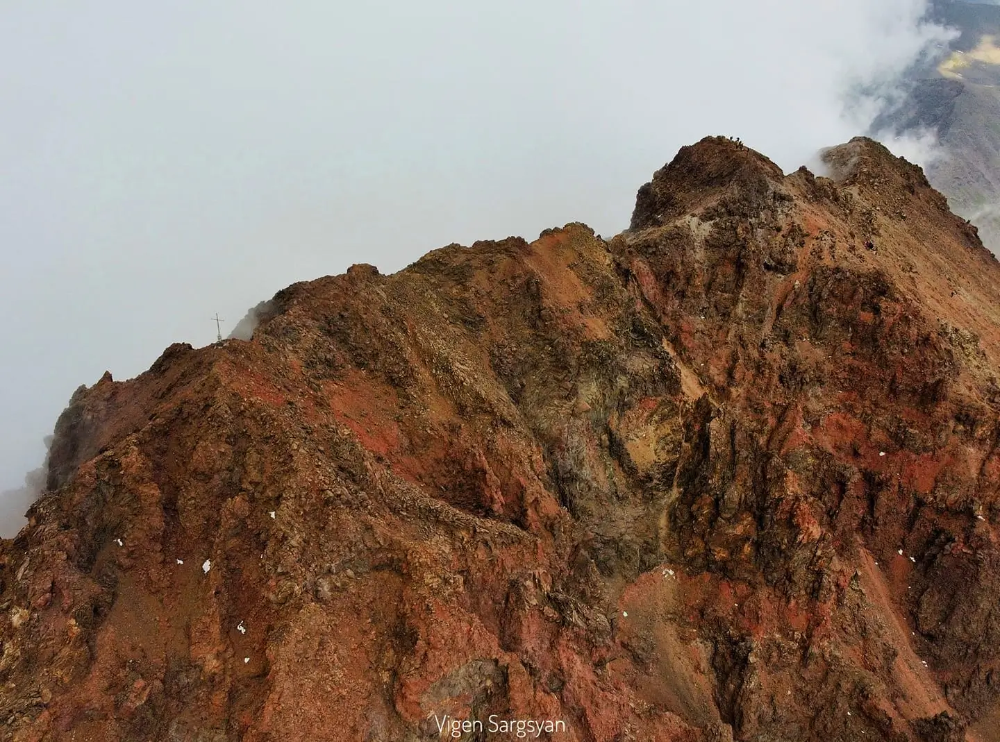
Արագած լեռ
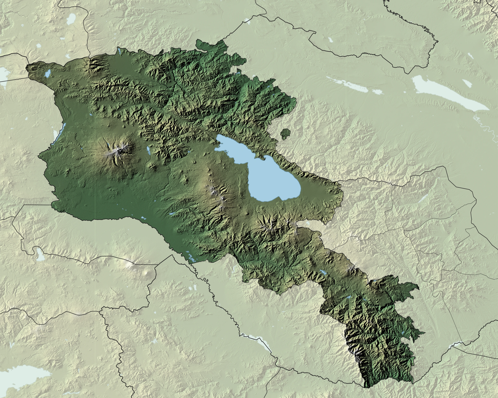
Ռելիեֆը
ՀՀ աշխարհագրական տվյալներ
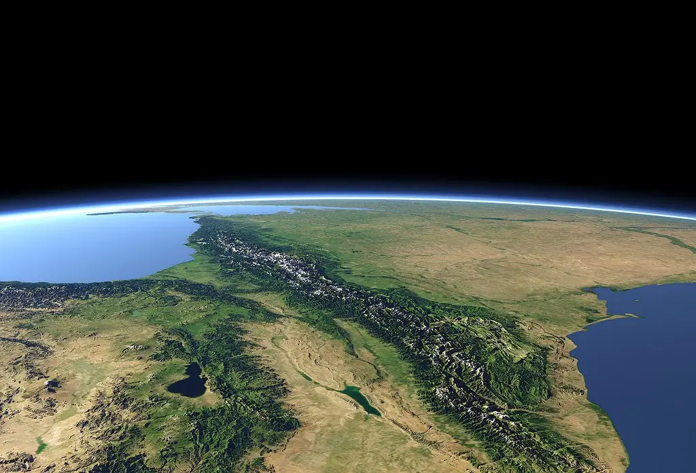
Թվեր և դիրք
- 29 743 կմ² (աշխարհում 138‑րդ տեղը): Այն կազմում է երկրագնդի ցամաքի 0,02 %-ը, Ասիա աշխարհամասի տարածքի մոտ 0,7 %-ը /Վիքիպեդիա, WorldAtlas
- Տեղակայումը՝ Ասիայի արևմտյան մասում, զբաղեցնելով Հայկական լեռնաշխարհի հյուսիս-արևելյան հատվածի 1/3 մասը՝ հարավային Կովկասի և Առաջավոր Ասիայի միջև (Քուռ և Արաքս գետերի միջին հոսանքների միջգետային տարածքում): /Վիքիպեդիա, WorldAtlas
Կոորդինատներ
Հարավից՝
38° 50′ N /38 աստիճան հյուսիսային լայնության 50՛/
Հյուսիսից՝
41° 18′ N/ 41 աստիճան հյուսիսային լայնության 18՛/
Արևմուտքից՝
43° 27′ E /43 աստիճան արևելյան երկայնության 27՛/
Արևելքից՝
46° 37′ E /46 աստիճան արևելյան երկայնության 37՛/
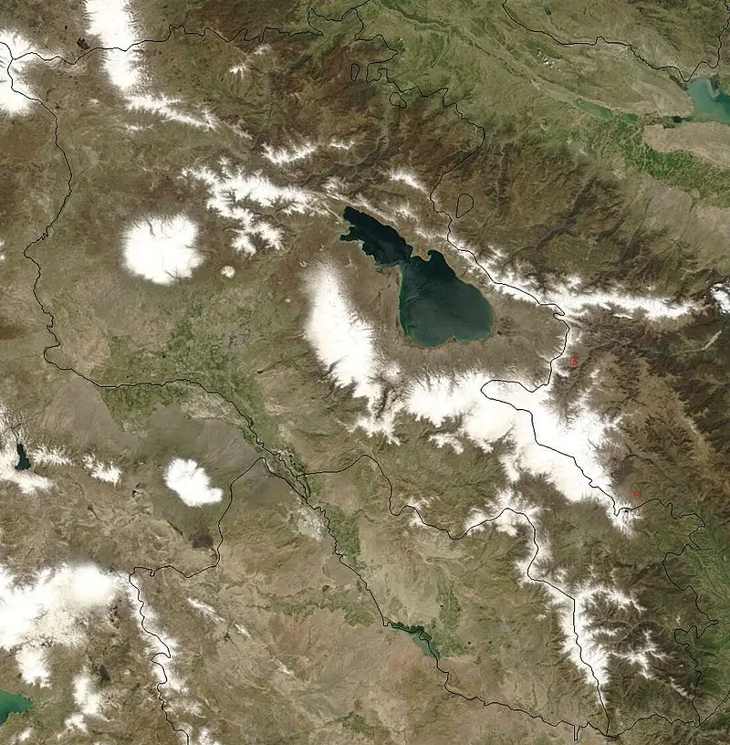
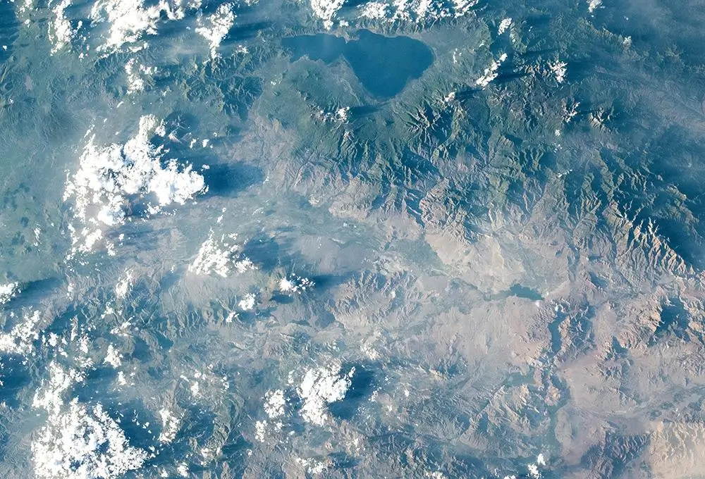
ՀՀ սահմանները և սահմանակից երկրները
Հայաստանին սահմանակցում են 4 պետություններ՝Իրանի Իսլամական Հանրապետություն,Վրաստան, Թուրքիա, Ադրբեջան:
ՀՀ պետական սահմանի երկարությունը կազմում է 1574կմ:
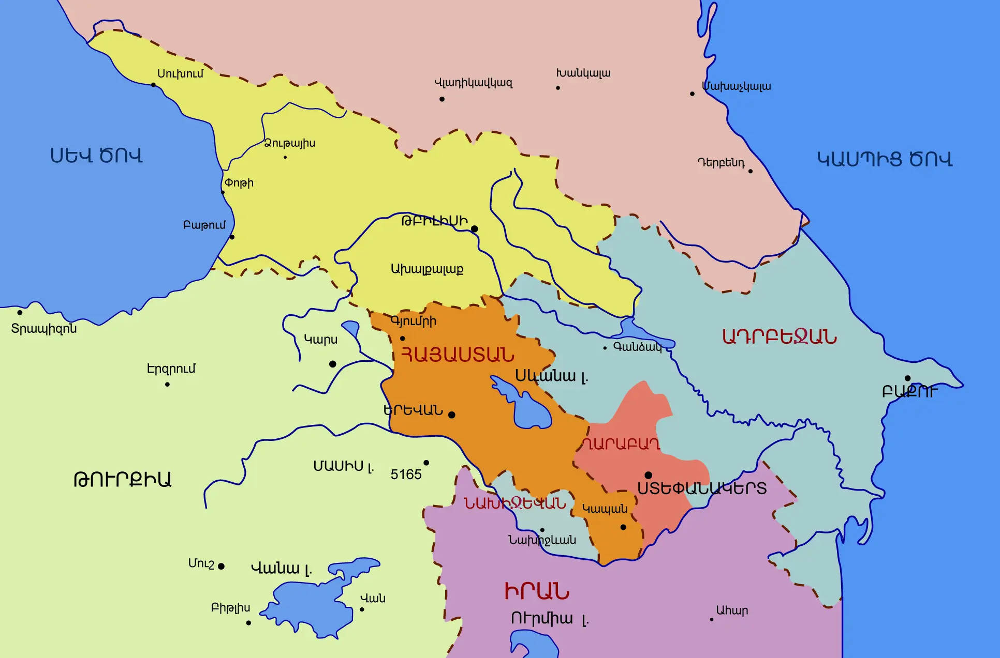
Սահմանակից երկրները
Սահմանի երկարությունը
Սահմանի ընդհանուր երկարությունը
1574 կմ
Հյուսիսից
Վրաստան
196կմ
Արևելքից
Ադրբեջան
709 կմ
Արևմուտքից
Թուրքիա
280 կմ
Հարավից
Իրան
43 կմ
Հարավ-արևելքից
Ադրբեջան/ ԼՂՀ /
125 կմ
Հարավ-արևմուտքից
Ադրբեջան /Նախիջևան/
221 կմ
Այս պահի դրությամբ Հայաստանի և Ադրբեջանի միջև սահմանի ամբողջական երկարությունը կազմում է մոտ 1055 կմ։
Մինչև 2020 թ. 44-օրյա պատերազմը ՀՀ և Արցախի միջև սահմանի երկարությունը կազմում էր մոտ 850 կմ (ներառյալ անվտանգության գոտին):
Պետական սահմանն անցնում է Արաքս գետով. Վրաստանի հետ՝ Ջավախքի լեռնավահանով, Լոռվա դաշտով և Վիրահայոց լեռներով, Թուրքիայի հետ՝ Եղնախաղի լեռնավահանով, Ախուրյան և Արաքս գետերով, Ադրբեջանի հետ՝Վայքի, Զանգեզուրի և Սևանի լեռաշղթաներով: Երկիրը լեռնային մակերևույթով հյուսիսից և արևելքից շրջապատված է Փոքր Կովկասի լեռնաշղթաներով:
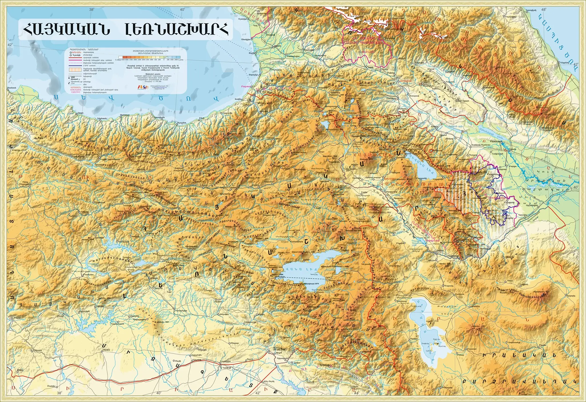
Տարածաշրջանի աշխարհագրական քարտեզը
ՀՀ տարածքի ամենամեծ ձգվածությունը հյուսիս-արևմուտքից հարավ-արևելք է (մոտ 360կմ), արևմուտքից-արևելք (կենտրոնական ամենալայն մասը) 200կմ է: Նվազագույն ձգվածությունը (ամենանեղ մասը) Հայ-Իրանական սահմանի հատվածում է (42 կմ):
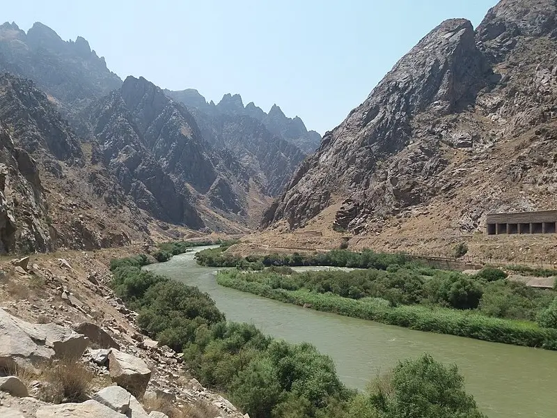
Արաքս գետը
ՀՀ տարածքի երկրաչափական կենտրոնը՝ անկյունագծերի հատման կետը, գտնվում է Գառնի գյուղում:
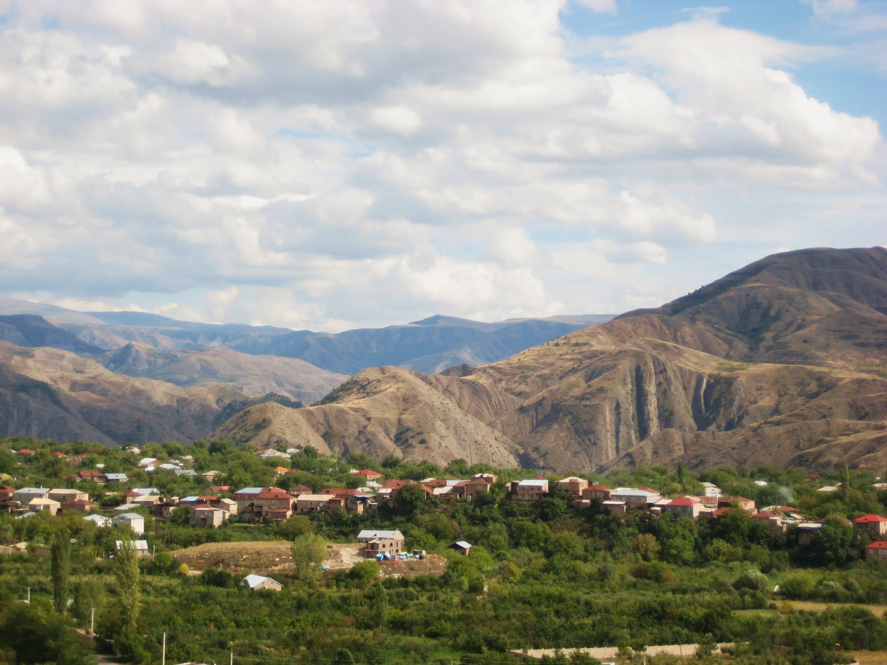
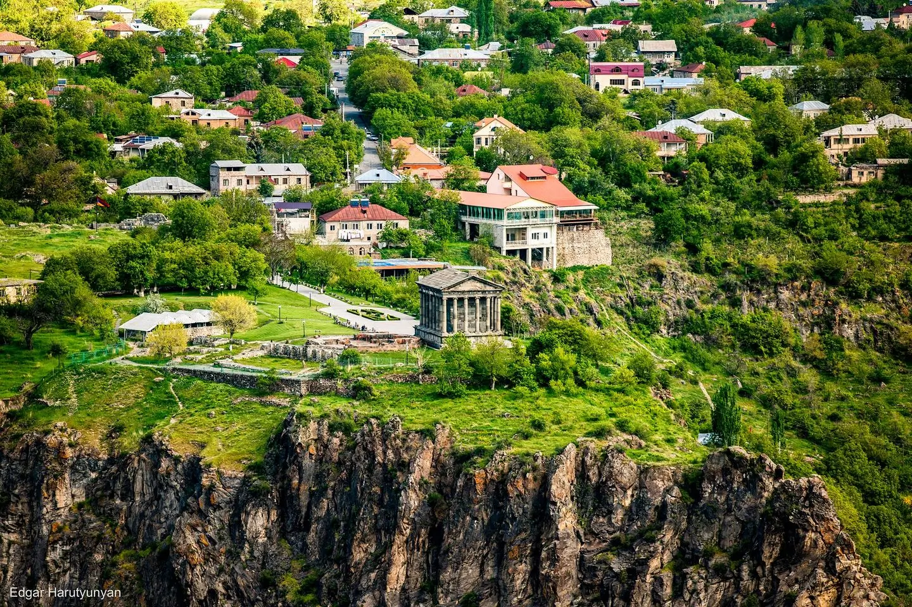
Ինչով է բացառիկ Հայաստանը
Աշխարհագրական դիրք, որը Հայաստանը դարձնում է բացառիկ
Հայաստանը պարզապես երկիր չէ քարտեզի վրա։ Այն մի վայր է, որտեղ յուրահատուկ աշխարհագրությունն ու պատմական փորձառությունները միահյուսվում են՝ ստեղծելով ճամփորդության բացառիկ հնարավորություն։
Լեռնային երկիր՝ արկածների սիրահարների համար
Հայաստանը գծագրում է բնության կտրուկ լանդշաֆտներով։ Այստեղ
լեռներ կան ամեն քայլափոխի, ինչը նշանակում է՝ բազմազան, այդ
թվում՝ դժվարանցանելի արշավային ուղիներ, հիասքանչ դիտակետեր և
լեռներից բացվող անզուգական արևածագեր։
«Դժվարանցանելի» մեզ մոտ նշանակում է՝ չբացահայտված և մաքուր
բնություն։
Միջմայրցամաքային մշակույթ
Եվրոպայի և Ասիայի խաչմերուկում լինելը Հայաստանը դարձրել է
քաղաքակրթությունների յուրօրինակ խառնուրդ։ Այստեղ կարող եք
միաժամանակ զգալ հինավուրց արևելք, հելլենիստական
ճարտարապետություն և սովետական ժառանգություն։
«Մշակույթների հանդիպման այս եզակի կետը զգում ես՝ հենց
օդանավակայանից դուրս գալիս»։
Ճանապարհներ՝ ոչ միայն ուղղություն, այլ փորձառություն
Հայաստանում ճանապարհորդելը երբեմն դառնում է արկած։ Բոլոր
ճանապարհները գերծանրաբեռնված չեն, և հենց դա է յուրահատկությունը։
Դուք կանցնեք լեռներով, գետերով ու հնագույն քարայրերով, որոնք
հաճախ պատահում են այնպես, ինչպես դարեր առաջ։
*«GPS-ը կարող է սխալվել, բայց հին մարդը՝ երբեք»։
Փակ սահմաններ, բայց բաց դռներ դեպի ներս
Չնայած որոշ սահմաններ փակ են, Հայաստանը բաց է իր այցելուների առաջ։ Դա օգնում է կենտրոնանալ ներքին խաղաղության, հարուստ պատմության և տեղական մշակույթի վրա։
Վայր, որտեղ ժամանակը շարժվում է այլ ռիթմով
Այստեղ մարդիկ դեռ ասում են բարև, հյուրասիրում են առանց սպասելու։ Դուք կարող եք մոռանալ քաղաքի աղմուկը և վերագտնել պարզ ու մարդկային կապերը։
«Փակ դռների հետևում բացվում է մի ամբողջ աշխարհ՝ ջերմ ու անկեղծ»